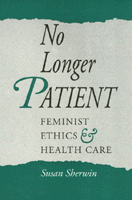

The first comprehensive handling of feminist bioethics
The first comprehensive handling of feminist bioethics


 The first comprehensive handling of feminist bioethics
The first comprehensive handling of feminist bioethics

|  |
No Longer PatientFeminist Ethics and Health CareSusan Sherwinpaper EAN: 978-1-56639-061-3 (ISBN: 1-56639-061-3) |
"[Sherwin] seeks to educate her readers and to recruit them to join her efforts at reform. The result is an excellent introduction to applied feminism for anyone willing to entertain a fresh perspective on health care ethics."
—The New England Journal of Medicine
Medical ethics and feminist ethics are both comparatively new disciplines. In this pioneering study, Susan Sherwin explores for the first time the relationship between them and suggests their implications for the structures of medical care delivery and the allocation of health care resources. No Longer Patient is certain to influence public policy makers and the public, as it examines such controversial subjects as abortion, new reproductive technologies, surrogate motherhood, and in vitro fertilization.
Sherwin observes that "medicine has become one of our most powerful and significant institutions." Thus a feminist ethics of health care must examine health care practices as they relate to the entire power structure and the problems that may be invisible to those without a feminist perspective. Accordingly, Sherwin examines many issues central to bioethics today, maintaining that feminist ethics allows a deeper and broader analysis. Feminist ethics focuses on and analyzes these issues differently from the non-feminist literature and ultimately draws different conclusions from those indicated by traditional medical ethics.
A leader in the fields of feminist theory and ethics, Sherwin demonstrates that an anti-woman bias is deeply rooted in the history of philosophy. Her careful building of positions, her unique approaches to analyzing problems, and her excellent insights make this an important work for feminists, those working in bioethics, and health care professionals.
Excerpt available at www.temple.edu/tempress
"A broad and solid account of the relevance of feminist ethics to health care ethics.... Throughout, the emphasis is on the dominance relations that permeate the system of health care and constitute a major obstacle to fair and appropriate provision of care."
—Choice
"Susan Sherwin addresses the enormous gap between the field that has developed as 'bioethics' and the concern of feminist ethicists addressing these same issues.... Sherwin shows where the women are missing, where traditional bioethics as a developing field has gone afield. In doing this, she makes an important statement."
—Barbara Katz Rothman, Professor of Sociology, Baruch College, CUNY
"Sherwin evaluates feminist and non-feminist views about abortion, the new procreative technologies, the doctor/patient relationship, and other important subjects, always stressing the different meanings these experiences can have for different women.... A must for anyone who wants to understand and think clearly about the ethical dimensions of contemporary biomedicine."
—Ruth Hubbard, Professor of Biology Emerita, Harvard University
"No other book gives a feminist analysis of the field of medical ethics. This book is ground-breaking and could become the classic source in an important new subfield."
—Helen B. Holmes, Editor, Feminist Ethics & Medicine (special issue of Hypatia)
"A strong contribution to the literature on feminist ethics and on bioethics."
—Kathleen Okruhlik, University of Western Ontario
Acknowledgments
Introduction
Part I: Theoretical Beginnings
1. Understanding Feminism
2. Ethics, "Feminine" Ethics, and Feminist Ethics
3. Feminism and Moral Relativism
4. Toward a Feminist Ethics of Health Care
Part II: Traditional Problems in Health Care Ethics
5. Abortion
6. New Reproductive Technologies
7. Paternalism
8. Research
Part III: Feminist Expansions of the Bioethics Landscape
9. Ascriptions of Illness
10. Medical Constructions of Sexuality
11. Gender, Race, and Class in the Delivery of Health Care
Notes
References
Index
Susan Sherwin is Professor of Philosophy and Women's Studies at Dalhousie University.
Philosophy and Ethics
Women's Studies
Health and Health Policy
© 2015 Temple University. All Rights Reserved. This page: http://www.temple.edu/tempress/titles/778_reg.html.